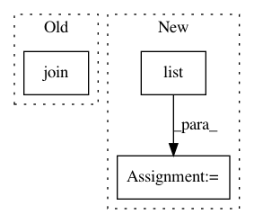

139563a555e2638ab67f7a83a0a775b2f0f21ce6,setup.py,,,#,14
Before Change
join(src_top, "bin", "pitch", "swipe", "swipe.c"),
join(src_top, "bin", "pitch", "swipe", "vector.c"),
]
hts_engine_src = glob(join(src_top, "bin", "vc", "hts_engine_API", "*.c"))
sptklib_src = glob(join(src_top, "lib", "*.c"))
sptk_src = glob(join(src_top, "bin", "*", "_*.c"))
After Change
ignore_bin_list = [join(src_bin_top, "wavjoin"), join(src_bin_top, "wavsplit"),
join(src_bin_top, "vc")]
for ignore in ignore_bin_list:
sptk_all_src = list(
filter(lambda s: not s.startswith(ignore), sptk_all_src))
// define core cython module
ext_modules = [Extension(
name="pysptk.sptk",
In pattern: SUPERPATTERN
Frequency: 3
Non-data size: 3
Instances
Project Name: r9y9/pysptk
Commit Name: 139563a555e2638ab67f7a83a0a775b2f0f21ce6
Time: 2015-09-29
Author: zryuichi@gmail.com
File Name: setup.py
Class Name:
Method Name:
Project Name: ellisdg/3DUnetCNN
Commit Name: e6a8a482f15803b24fc4bda6e2a0bd001ca77c87
Time: 2017-04-07
Author: david.ellis@unmc.edu
File Name: data.py
Class Name:
Method Name: read_subject_folder
Project Name: cesium-ml/cesium
Commit Name: 586b49b07574f7812101248c94d73ef1fb2a5c12
Time: 2015-11-11
Author: brettnaul@gmail.com
File Name: mltsp/predict.py
Class Name:
Method Name: add_to_predict_results_dict_classification_proba